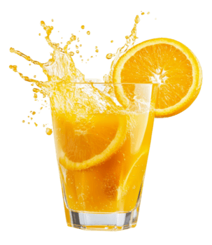

Orange juice VS Fanta

After conducting a comparison between both boba and Raibi, and also coffee and the traditional Moroccan tea, I’ve decided to conduct a new comparison between orange juice and the famous Fanta.
Orange juice is often associated with freshness and natural energy. Made directly from pressed oranges, it contains essential vitamins such as vitamin C, along with antioxidants that support overall health. Its taste can vary from sweet to slightly tangy depending on the type of oranges used, giving it a more authentic and less predictable flavor profile compared to processed drinks.
On the other hand, Fanta is a globally recognized soft drink known for its bright color and consistent sweetness. It is a carbonated beverage flavored to resemble orange, but it is made using artificial or natural flavorings along with added sugars. Its fizzy texture and bold taste make it a popular choice, especially among younger consumers looking for a refreshing and fun drink.
One of the key differences between orange juice and Fanta lies in their nutritional value. Orange juice provides natural nutrients and can contribute to a balanced diet when consumed in moderation. In contrast, Fanta contains high levels of sugar and offers little to no nutritional benefits, making it more of an occasional treat rather than a daily beverage.
Finally, the choice between orange juice and Fanta often depends on personal preferences and lifestyle. Those seeking a healthier and more natural option may prefer orange juice, while others might enjoy the sweetness and carbonation of Fanta for its taste and refreshing sensation. Both drinks have their place, but they serve very different purposes.